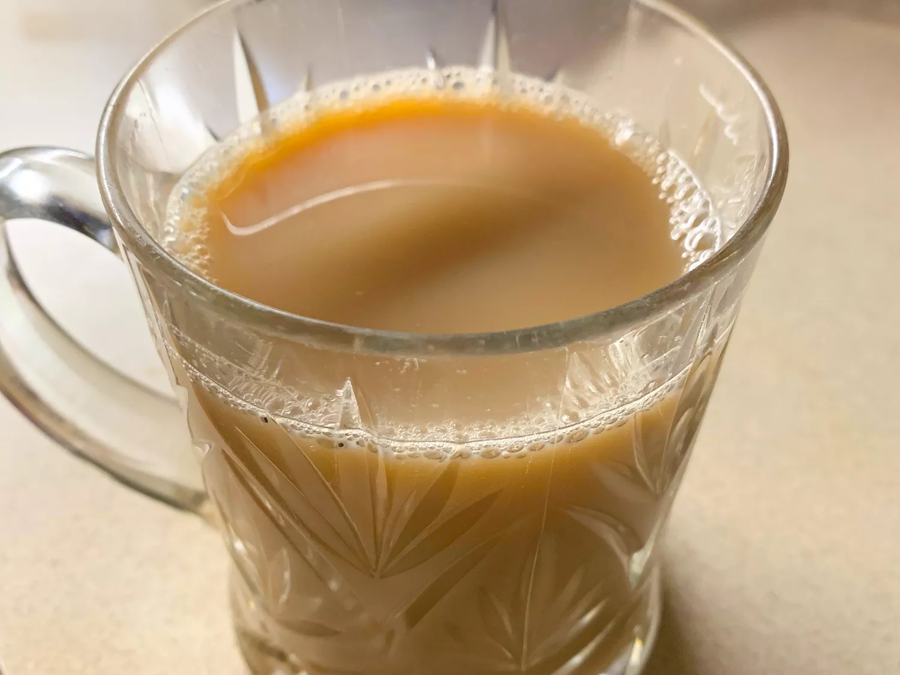

Whisky Tea
Home

Description
Whisky Tea is a warming, soothing beverage that combines the robust flavors of black tea with the complex notes of good whisky. This comforting drink has been enjoyed in Scotland and Ireland for generations, especially on cold, damp evenings or as a nightcap before bed.
The beauty of Whisky Tea lies in its simplicity. The whisky's natural warmth and complexity perfectly complement the tannins in black tea, while honey or sugar adds just enough sweetness to round out the flavors. A touch of lemon brightens the drink, making it both refreshing and comforting at the same time.
Ingredients
- 1 cup (240ml) hot, freshly brewed strong black tea (Scottish Breakfast or Irish Breakfast tea works well)
- 1-2 tablespoons (15-30ml) good quality whisky (Scotch or Irish whiskey)
- 1 teaspoon honey or brown sugar, or to taste
- Fresh lemon slice or a squeeze of lemon juice (optional)
- Cinnamon stick for garnish (optional)
- Star anise for garnish (optional)
Steps
- Warm your mug or glass by filling it with hot water and letting it sit for a minute. Discard the water.
- Place a tea bag or 1-2 teaspoons of loose-leaf black tea in the mug and pour freshly boiled water over it.
- Allow the tea to steep for 3-5 minutes, depending on how strong you prefer your tea.
- Remove the tea bag or strain out the loose tea leaves.
- Stir in the honey or brown sugar until completely dissolved.
- Add the whisky and stir gently to combine.
- If desired, add a squeeze of fresh lemon juice or float a thin slice of lemon on top.
- Garnish with a cinnamon stick or star anise if using.
- Serve immediately while hot. Sip slowly and enjoy the warming sensation and complex flavors.